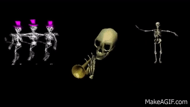
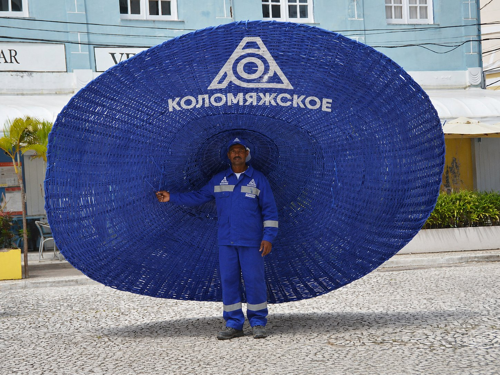
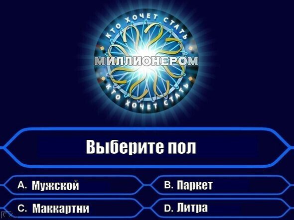
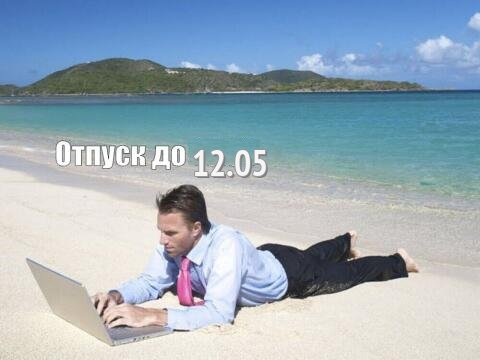
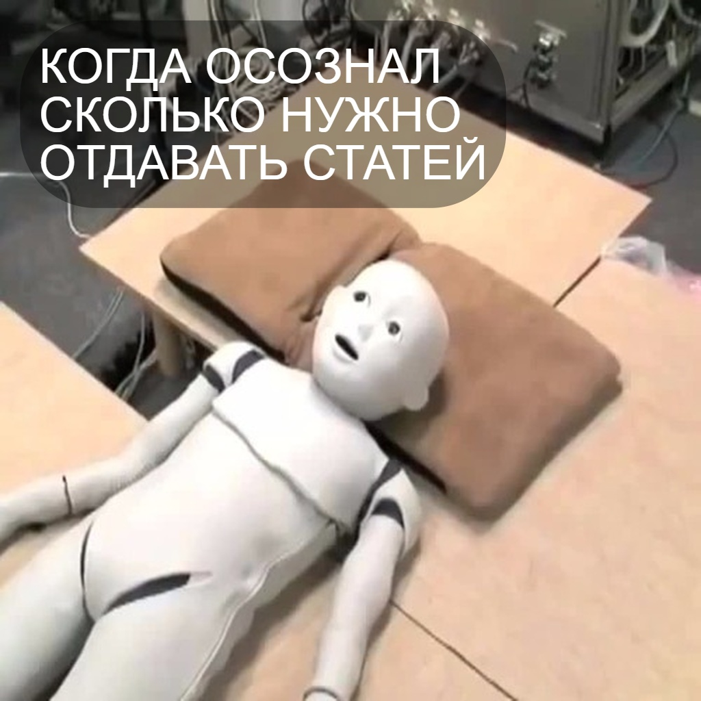
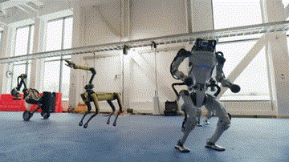

Трем укороченным неделям — один большой дайджест! Нас долго не было — скорее читайте и утоляйте тоску по новостям, которые реально имеют значение.
Итак, поехали.
Семен уже окончательно внедрился в отдел маркетинга и во все рабочие процессы. Теперь сам собирает костяк коммерческих предложений, текст и делает дизайн с помощью Оркестра. В общем, дирижирует успешно и скоро начнёт собирать миллионы (мы в него верим).

Лена работает в связке с Семеном: всегда помогает, на подхвате и сама продолжает делать коммерческие.
Всего отдел маркетинга за три недели сделал более 30 КП. Всё по-взрослому.
Ваня сделал дизайн для сайта Паллетов. По скромному мнению Игоря, получилось просто: «Ракета, бомба, петарда». Мы солидарны.

Также Ваня завершил дизайн лендинга Piterstory по SMM, сделал кучу макетов для «Озона» и Х5 Group. А вишенка на торте — во вторник устроил нам презентацию будущего мерча. Мы теперь хотим собрать тотал-лук из нашей же символики. Получилось круто!
Алевтина, наконец, размотала Владислава из La Vue: сдала сайт и почти разрулила вопрос с нашими кровными 16 500 за текстики. Мы девушки не злопамятные, но деньгами сорить не любим. Тем более ценник дали более чем адекватный.

«Русская турбина» оплатила счет — и это тадам! Наш первый новый клиент!
«Цветочки» тоже подписали договор. Теперь ждем денег — и приступаем.

На этой неделе прошли две успешные встречи: с «ДоДо» и ТК «Голливуд». Все в восторге от наших ноу-хау-решений и ждут объемных КП. Отдел маркетинга, не подкачай!
Альбина держит фокус на тендерах. На этой неделе решили влезть еще в один блудняк — на этот раз с «Озоном». По нашим ожиданиям, будем продвигать площадку для детей. Наконец-то попали в область, где у нас капец какой большой опыт. Держим кулачки и не робеем.

Между прочим, с «Пятерочкой» всё получается. Мы прошли второй этап тендера по продвижению креативной платформы молодежного направления Х5. В среду защищаем наш проект. Пальцы скрещены.
Дорожники «Коломяжского» решили выпендриться и вместо кепок носить панамки. Альбина за день сделала КП и визуалы — у Марии глаза разбежались, пока думает, что выбрать.

Оксана констатировала приход крупной суммы от «Коломяжского» за апрель и май. Кайф! Живём.
Ещё Les Korse внесли предоплату за каталог — уже приступили к работе.

Катя за эти три недели сняла и смонтировала три видео для «Коломяжского». Про фотки молчим, но имеем в виду. В целом работа бурлит.
Впереди — два мощных инфоповода: День города и день рождения предприятия. Идей практически нет. Пожалуйста, если у вас возникнут крутые идеи — присылайте Кате в личку. Очень надо. Она уже нервничает.
На этой неделе к нам свежими и отдохнувшими вернулись Сабина и Лиза.

Саби первым делом сходила на корабль — обсуждать сотрудничество. Но ВС был не в духе: просто провел экскурсию и был таков.
Был и второй заход на корабль. И там ВС только испортил Саби всё настроение и пожелал нам неудачи! Мы не испугались, но массово скупаем на вб булавки.
Ещё Сабина мастерски провела переговоры с ТК «Голливуд»: насвистела знатно, но это сработало.
Лиза на этой неделе подкрутила агентов по блогу. Теперь они штампуют до пяти статей в день, прям топовых. Не черт-те что, короче.

Еще допилили агентов, которые занимаются версткой кейсов на сайте. Теперь править руками почти не приходится. Агенты сами всё делают.
Горячая вау-новость: мы сделали простую и наглядную видео-презентацию того, как работает наш Оркестр в реальном времени. Это произвело вау-эффект. Ребята из ТК «Голливуд» сказали, что попали с нами в будущее, и тут же запросили КП. Если кратко — им интересно всё.

Ну и на сладенькое:
Альбина зарегилась на сайте знакомств — ищет свою любовь.
Лиза съездила в Москву.
Катя и Лена — в Тихвин.
Лиза и Саби — в Турцию. Привезли нам вкусняшек.
Все чин-чинарем! Живем, работаем, дирижируем оркестром и передаем недвусмысленный намек «Санта Глории»: за деньги — да.